The Bastion
Welcome to the Bastion! The Sawmill, the Quarry and the Stables produce on their own (collect what they gather with the Production button), and villagers make them produce much more: assign them however you like. Expeditions also bring materials depending on the region. Use them to upgrade the castle, and every building makes your adventurers stronger. Oh, and the Keep rules: no building can go above its level.
- It costs 12 h of income, once the Inn's Mines are open.
- Each producer makes 8 per hour per level, plus +50% per villager; the depot holds 8 h. You start with 3 villagers and each Houses level adds 2.
- Upgrading to levels 1–5 takes 50 / 150 / 400 / 1000 / 2500 materials, 1 / 3 / 8 / 16 / 32 h of income and 5 min / 30 min / 2 h / 6 h / 12 h of construction. Each video cuts 20% off the build.
- The Relay Post and Takuan together shorten expeditions by half at most (50%).
| Building | Lv 1 | Lv 2 | Lv 3 | Lv 4 | Lv 5 |
|---|---|---|---|---|---|
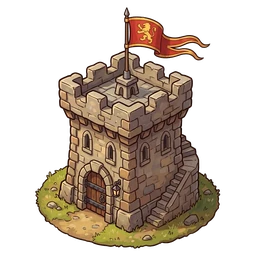 Keep The heart of the Bastion. No building can go above its level. | Buildings up to level 1 | Buildings up to level 2 | Buildings up to level 3 | Buildings up to level 4 | Buildings up to level 5 |
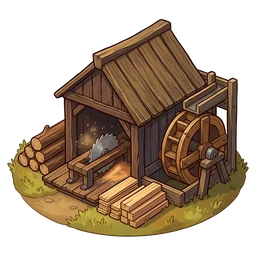 Sawmill Produces Wood. The lumberjacks sing; the trees have no say. | 8 Wood per hour (no villagers) | 16 Wood per hour (no villagers) | 24 Wood per hour (no villagers) | 32 Wood per hour (no villagers) | 40 Wood per hour (no villagers) |
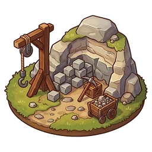 Quarry Produces Stone. Every now and then a dwarf asks if it's his. | 8 Stone per hour (no villagers) | 16 Stone per hour (no villagers) | 24 Stone per hour (no villagers) | 32 Stone per hour (no villagers) | 40 Stone per hour (no villagers) |
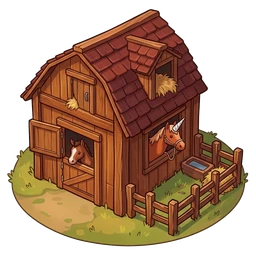 Stables Breeds Horses. One thinks it's a unicorn; nobody dares tell it. | 8 Horses per hour (no villagers) | 16 Horses per hour (no villagers) | 24 Horses per hour (no villagers) | 32 Horses per hour (no villagers) | 40 Horses per hour (no villagers) |
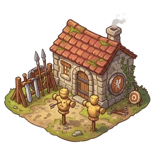 Barracks Daily training. Brakka yells, everyone improves. | +3% adventurer power | +6% adventurer power | +9% adventurer power | +12% adventurer power | +15% adventurer power |
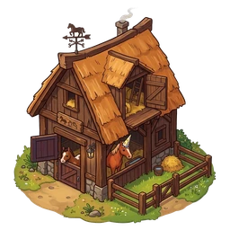 Waystation Fresh horses waiting along the road: less travel time. | Expeditions 5% shorter | Expeditions 10% shorter | Expeditions 15% shorter | Expeditions 20% shorter | Expeditions 25% shorter |
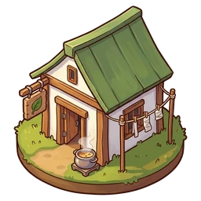 Hospital Clean bandages and hot soup. No phoenix stew. | Injured heal 15% faster | Injured heal 30% faster | Injured heal 45% faster | Injured heal 60% faster | Injured heal 75% faster |
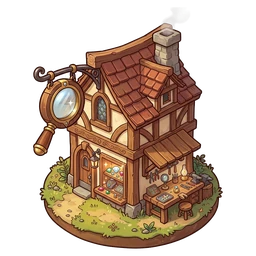 Jeweler's Workshop A jeweler with a loupe checks everything they bring. He finds things. | +10% Amulet chance | +20% Amulet chance | +30% Amulet chance | +40% Amulet chance | +50% Amulet chance |
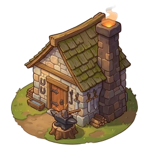 Castle Smithy A second anvil that helps your forges. Survives the Guild. | +5% forge income | +10% forge income | +15% forge income | +20% forge income | +25% forge income |
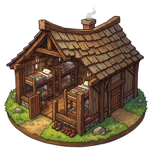 Quarters Extra beds for the Inn and a notice board to recruit faster. | +1 beds at the Inn · new candidates every 4 h | +1 beds at the Inn · new candidates every 3 h | +2 beds at the Inn · new candidates every 3 h | +2 beds at the Inn · new candidates every 2 h | +3 beds at the Inn · new candidates every 2 h |
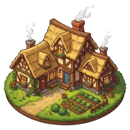 Houses More houses, more villagers. More villagers, more gossip. | 5 villagers in total | 7 villagers in total | 9 villagers in total | 11 villagers in total | 13 villagers in total |
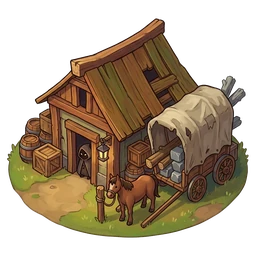 Smugglers They get wood, stone and horses without asking where they came from. They charge in Guild Seals. | from 30 Seals per material | from 27 Seals per material | from 24 Seals per material | from 21 Seals per material | from 18 Seals per material |
Smugglers
They sell materials for Guild Seals, in packs of 10, 50, 100. Each material costs 0.1% of the Seals you have, with a minimum of 30 / 27 / 24 / 21 / 18 depending on the building level. Spent Seals lower your income and don't come back on their own when you reset.